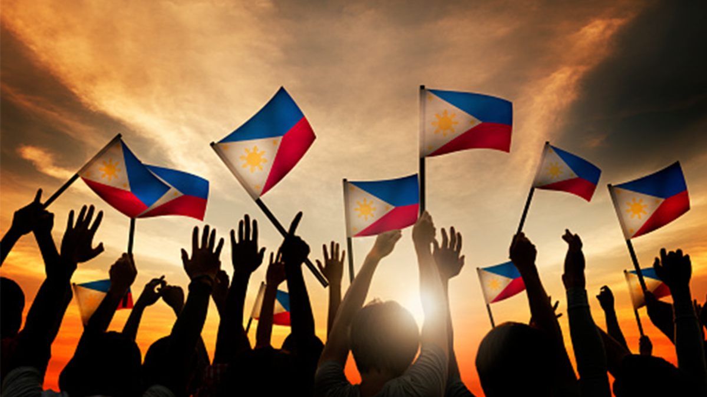

₊✩‧₊˚౨ৎ˚₊✩‧₊ Date: June 12 ₊✩‧₊˚౨ৎ˚₊✩‧₊ |
|
|---|---|
|  |
DescriptionEvery June 12th, the Philippines commemorates its Independence Day (Araw ng Kasarinlan), marking the country's declaration of independence from Spanish colonial rule in 1898. This national holiday represents not just a historical milestone, but also embodies the Filipino people's enduring spirit of freedom and sovereignty through centuries of struggle. The declaration of independence was proclaimed by General Emilio Aguinaldo in Kawit, Cavite, following the Philippine Revolution against Spain. The event was a culmination of years of resistance and rebellion against Spanish oppression, inspired by the ideals of liberty, equality, and self-determination. The celebration of independence would prove premature. Shortly after the declaration, Spain ceded the Philippines to the United States under the Treaty of Paris, ushering in a new period of American colonization. True sovereignty would not be achieved until July 4, 1946, when the United States formally recognized Philippine independence. |
*ੈ✩‧₊˚༺☆༻*ੈ✩‧₊˚ Kalayaan, Kinabukasan, Kasaysayan *ੈ✩‧₊˚༺☆༻*ੈ✩‧₊˚ |
|
Know about other holidays: |
|||||
|---|---|---|---|---|---|
| New Year | National Heroes' Day | Lunar New Year | Holy Week | Christmas | All Saints' Day |